| 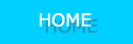 | 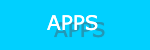 |
|---|
This is where the work I will do with javascripts will be located.
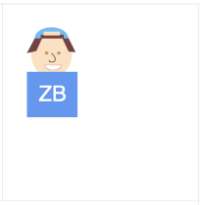
This is burke_bitmoji. This is a program of a bitmoji I made of myself.
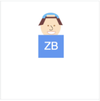
This is burke_dancingbitmoji. This is a program written where my bitmoji will "dance" on the screen by being randomly
positioned in the box with the click of the restart button.
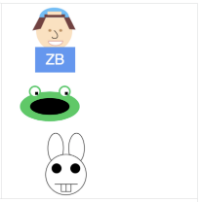
This is burke_racingbitmoji. This program is a race between my bitmoji, a frog I coded, and rabbit with buckteeth I coded.
The speeds of the racers is random on each race so the same result does not occur every race.
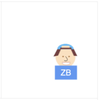
This is burke_dancingBitmojiFun. Similar to the first dancing program my bitmoji will "dance" however it can also be made
bigger or smaller proportionately using the "bitHeight" variable in the program.
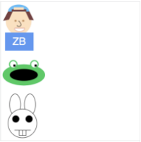
This is burke_racingBitmojiFun. In this program, similar to the other racing one, it will race my bitmoji, a frog, and a bunny
This one differs from the other racing one because the sizes of the racers can be changed to make them bigger or smaller.
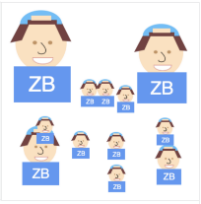
This is burke_resizeBitmoji. In this program there are 4 different sizes of my bitmoji and when the mouse is clicked it
will draw a 5th size on the position of the mouse. It will do this as many times as the mouse is clicked until the program is restarted.
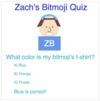
This is burke_Quiz. This is a program where a quiz is generated about my bitmoji and is interactive. After a question is answered hit restart to get a new one.
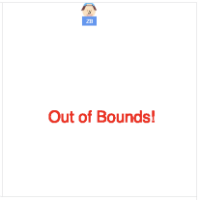
This is burke_Follow. In this program my bitmoji will follow the mouse around the screen, but be careful!
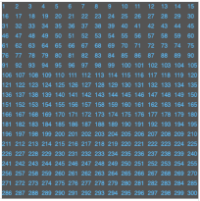
This is burke_formatted_integer. In this program a random integer will be generated on the click of the restart button and
show on the grid in an array format.
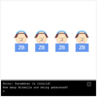
This is burke_bitmoji_line. In this program a random number of my bitmojis will be generated based on a random number.
When restarted a new numbers of bitmojis should be generated. A println is generated at the bottom to show what happens
when a number generated is not between 1 and 4, including those two numbers. It also tells how many are currently being generated.
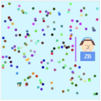
This is burke_DryBitmoji. This program shows my bitmoji in a rain storm with an umbrella that stops the rain from hitting him.